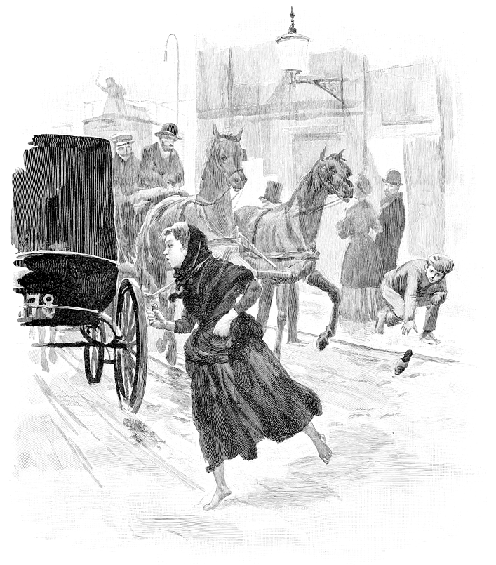
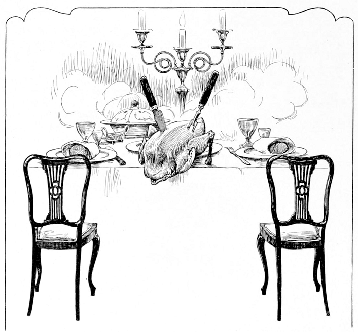
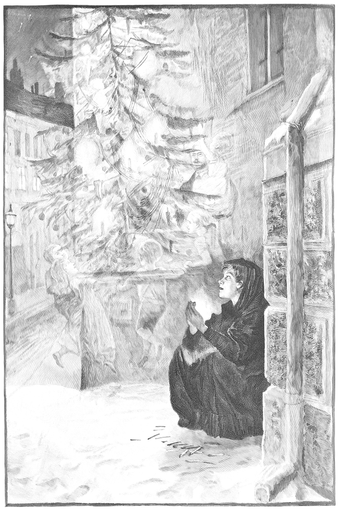
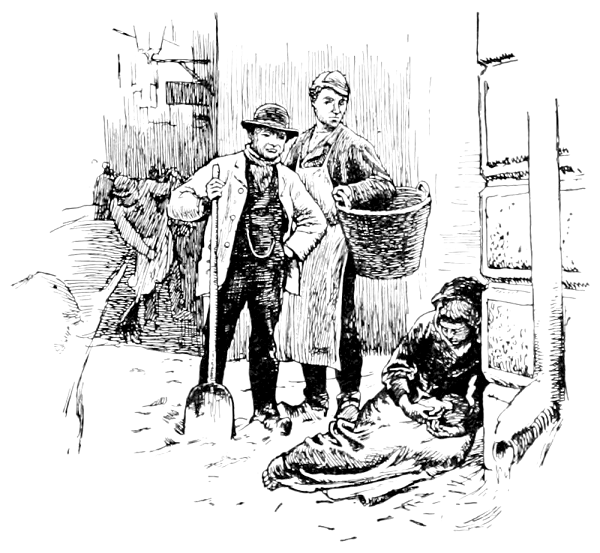

それは、ひどく寒いおおみそかの夜のことでした。あたりはもうまっくらで、こんこんと雪が降っていました。寒い夜の中、みすぼらしい一人の少女が歩いていました。ぼうしもかぶらず、はだしでしたが、どこへ行くというわけでもありません。行くあてがないのです。ほんとうは家を出るときに一足の木ぐつをはいていました。でも、サイズが大きくぶかぶかで、役に立ちませんでした。実はお母さんのものだったので無理もありません。道路をわたるときに、二台の馬車がとんでもない速さで走ってきたのです。少女は馬車をよけようとして、木ぐつをなくしてしまいました。木ぐつの片方は見つかりませんでした。もう片方は若者がすばやくひろって、「子供ができたときに、ゆりかごの代わりになる。」と言って、持ちさってしまいました。だから少女はその小さなあんよに何もはかないままでした。あんよは寒さのために赤くはれて、青じんでいます。少女の古びたエプロンの中にはたくさんのマッチが入っています。手の中にも一箱持っていました。一日中売り歩いても、買ってくれる人も、一枚の

どの家のまども明かりがあかあかとついていて、おなかがグゥとなりそうなガチョウの丸焼きのにおいがします。そっか、今日はおおみそかなんだ、と少女は思いました。一つの家がとなりの家よりも通りに出ていて、影になっている場所がありました。地べたに少女はぐったりと座りこんで、身をちぢめて丸くなりました。小さなあんよをぎゅっと引きよせましたが、寒さをしのぐことはできません。少女には、家に帰る勇気はありませんでした。なぜなら、マッチが一箱も売れていないので、一枚の銅貨さえ家に持ち帰ることができないのですから。するとお父さんはぜったいほっぺをぶつにちがいありません。ここも家も寒いのには変わりないのです、あそこは屋根があるだけ。その屋根だって、大きな穴があいていて、すきま風をわらとぼろ布でふさいであるだけ。小さな少女の手は今にもこごえそうでした。そうです！ マッチの火が役に立つかもしれません。マッチを箱から取り出して、カベでこすれば手があたたまるかもしれません。少女は一本マッチを取り出して――「シュッ！」と、こすると、マッチがメラメラもえだしました！ あたたかくて、明るくて、小さなロウソクみたいに少女の手の中でもえるのです。本当にふしぎな火でした。まるで、大きな鉄のだるまストーブの前にいるみたいでした、いえ、本当にいたのです。目の前にはぴかぴかの

少女はべつのマッチをかべでこすりました。すると、火はいきおいよくもえだしました。光がとてもまぶしくて、かべがヴェールのようにすき通ったかと思うと、いつのまにか部屋の中にいました。テーブルには雪のように白いテーブルクロスがかかっていて、上にごうかな銀食器、ガチョウの丸焼きがのっていました。ガチョウの丸焼きにはリンゴとかんそうモモのつめ物がしてあって、湯気が立っていてとてもおいしそうでした。しかし、ふしぎなことにそのガチョウが

少女はもう一つマッチをすると、今度はあっというまもありませんでした。少女はきれいなクリスマスツリーの下に座っていたのです。ツリーはとても大きく、きれいにかざられていました。それは、少女がガラス戸ごしに見てきた、どんなお金持ちの家のツリーよりもきれいでごうかでした。ショーウィンドウの中にあるあざやかな絵みたいに、ツリーのまわりの何千本もの細長いロウソクが、少女の頭の上できらきらしていました。少女が手をのばそうとすると、マッチはふっと消えてしまいました。
たくさんあったクリスマスのロウソクはみんな、ぐんぐん空にのぼっていって、夜空にちりばめた星たちと見分けがつかなくなってしまいました。そのとき少女は一すじの流れ星を見つけました。すぅっと黄色い線をえがいています。「だれかが死ぬんだ……」と、少女は思いました。なぜなら、おばあさんが流れ星を見るといつもこう言ったからです。人が死ぬと、流れ星が落ちて命が神さまのところへ行く、と言っていました。でも、そのなつかしいおばあさんはもういません。少女を愛してくれたたった一人の人はもう死んでいないのです。
少女はもう一度マッチをすりました。少女のまわりを光がつつみこんでいきます。前を見ると、光の中におばあさんが立っていました。明るくて、本当にそこにいるみたいでした。むかしと同じように、おばあさんはおだやかにやさしく笑っていました。「おばあちゃん！」と、少女は大声を上げました。「ねぇ、わたしをいっしょに連れてってくれるの？ でも……マッチがもえつきたら、おばあちゃんもどこかへ行っちゃうんでしょ。あったかいストーブや、ガチョウの丸焼き、大きくてきれいなクリスマスツリーみたいに、パッと消えちゃうんでしょ……」少女はマッチの

朝になると、みすぼらしい服を着た少女がかべによりかかって、動かなくなっていました。ほほは青ざめていましたが、口もとは笑っていました。おおみそかの日に、少女は寒さのため死んでしまったのです。今日は一月一日、一年の一番初めの太陽が、一体の小さななきがらを照らしていました。少女は座ったまま、死んでかたくなっていて、その手の中に、マッチのもえかすの束がにぎりしめられていました。「この子は自分をあたためようとしたんだ……」と、人々は言いました。でも、少女がマッチでふしぎできれいなものを見たことも、おばあさんといっしょに新しい年をお祝いしに行ったことも、だれも知らないのです。だれも……
また、新しい一年が始まりました。